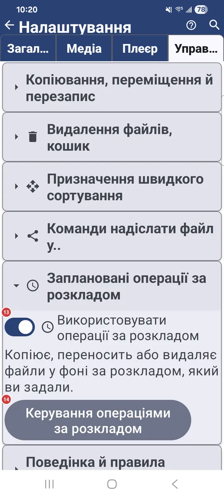
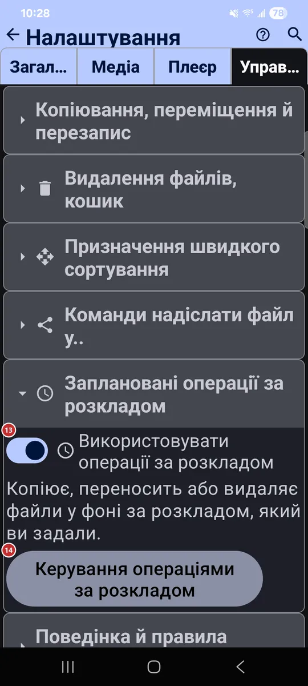

Налаштування: Управління
Для чого цей екран
На вкладці «Управління» ви налаштовуєте, як копіюються, переміщуються й видаляються файли, які ресурси служать призначеннями швидкого сортування, що застосунок записує та робить у фоні й які додаткові програми та жести ввімкнено.


Порядок дій
Єдиного порядку тут немає - кожен параметр працює сам по собі. Нижче їх згруповано за тими самими заголовками розділів, що й на вкладці. Деякі групи, наприклад «Wear-супутник» чи заплановані операції, є лише там, де їх підтримують пристрій або версія застосунку.
Елементи
Копіювання, переміщення й перезапис
1Дозволити копіюванняДозволяє копіювати файли в папки-призначення.
Разом із призначеннями швидкого сортування нижче дає змогу копіювати поточний файл одним дотиком.
2Перезаписувати при копіюванніЗамінює файл із тим самим іменем під час копіювання.
Діє, коли в призначенні вже лежить файл з таким іменем.
- Скасування
- Перезаписаний файл замінюється новим, тож не вмикайте параметр, якщо не впевнені.
3Переходити до наступного після копіюванняПереходить до наступного файлу після успішного копіювання.
Пришвидшує розбирання пачки файлів: вручну переходити не потрібно.
4Дозволити переміщенняДозволяє переміщувати файли в папки-призначення.
Разом із призначеннями швидкого сортування нижче дає змогу перемістити поточний файл одним дотиком.
5Перезаписувати при переміщенніЗамінює файл із тим самим іменем під час переміщення.
Діє, коли в призначенні вже лежить файл з таким іменем.
- Скасування
- Перезаписаний файл замінюється новим, тож не вмикайте параметр, якщо не впевнені.
Видалення файлів, кошик
6Увімкнути безпечний режимПитає підтвердження перед видаленням і переміщенням.
Коли режим увімкнено, застосунок питає перед видаленням або переміщенням файлів, щоб випадково не втратити дані. Два параметри нижче вмикають запитання окремо.
7Підтверджувати видаленняПитає підтвердження перед видаленням файлів.
У вкладки «Плеєр» є власний перемикач для видалення всередині плеєра.
8Підтверджувати переміщенняПитає підтвердження перед переміщенням файлів.
Переміщення змінює місце файлу, тож запитання дає змогу зупинитися.
9Використовувати кошик (.trash)Відправляє видалені файли в приховану папку .trash, а не стирає їх назавжди.
На локальних ресурсах файл можна повернути кнопкою «Скасувати», поки ресурс не закрито. Мережеві й хмарні файли завжди видаляються безповоротно. В Android 12 і новіших деяким спільним папкам потрібен дозвіл «Керування медіафайлами»; без нього видалення може стати незворотним. Коли параметр вимкнено, файли видаляються одразу, а місце звільняється негайно.
- Скасування
- Кошик - це страховка, а не архів: якщо очистити його кнопкою «Видалити все в кошику», ці файли зникнуть назавжди.
Призначення швидкого сортування
10Макс. призначень (1-30)Обмежує кількість призначень швидкого сортування.
Від 1 до 30. У кожного призначення є номер і колір, щоб його було легко впізнати.
11+ ДодатиПозначає ще один ресурс як призначення швидкого сортування.
Кнопка з’являється, коли є ресурси, які ще не стали призначеннями. Спершу додайте ресурси у списку ресурсів, а тоді позначте їх тут.
12Призначення швидкого сортуванняВаші призначення швидкого сортування за порядком номерів.
У рядку видно номер і колір призначення, його назву та шлях. Стрілки змінюють порядок, а кнопка видалення прибирає призначення зі списку.
- Скасування
- Видалення призначення лише знімає позначку з ресурсу. Сам ресурс і його файли залишаються на місці.
Заплановані операції за розкладом
13Використовувати операції за розкладомВмикає й вимикає запуск за розкладом.
Поки параметр вимкнено, нічого не запускається за розкладом, але ваші операції зберігаються. Увімкніть, і вони продовжать роботу.
14Керування операціями за розкладомВідкриває вікно, де ви створюєте заплановані операції й керуєте ними.
Запланована операція копіює, переміщує або видаляє файли у фоні за розкладом, який ви задаєте.
Поведінка й правила програми
15Показувати детальні помилкиПоказує повні відомості про помилку замість спрощених повідомлень.
Стане в пригоді, коли ви шукаєте причину проблеми або повідомляєте про неї.
16Продовжувати відтворення при наступному запускуВідкриває останній відтворюваний файл під час запуску застосунку.
Відтворення продовжується з того місця, де ви зупинилися.
17Запамʼятовувати списки файлів (за замовчуванням для нових ресурсів)Зберігає список файлів нових ресурсів, щоб вони відкривалися швидше.
Після сканування список зберігається в базі застосунку, і наступного разу завантажується одразу. Щоб підхопити зміни, зроблені поза застосунком, натисніть «Оновити». Це лише значення за замовчуванням для нових ресурсів.
Фотографування
18Увімкнути зйомку фотоПоказує команду камери в браузері файлів.
Нові фото зберігаються в ресурс, який ви переглядаєте. Поруч є параметри: питати ім’я файлу, відкривати фото для редагування, копіювати його в буфер обміну, додавати геотеґ і вибрати інше місце збереження.
Відеозйомка
19Увімкнути запис відеоПоказує команду запису відео просто в поточний ресурс.
Додатковий параметр відкриває готове відео в плеєрі, а ще можна вибрати іншу папку для збереження.
Диктофон
20Увімкнути запис із мікрофонаПоказує кнопку мікрофона в браузері файлів.
Звук записується у вибраний ресурс або в папку Downloads. Можна також увімкнути запитання про ім’я файлу під час кожного запису.
Запис відео з екрана
21Відеозапис екранаЗаписує весь екран у відеофайл зі звуком із мікрофона.
Під час запису з’являються кнопка зупинки й таймер. Місце збереження відео можна вибрати.
Wear-супутник
22Wear-супутникПоказує Wear-супутник на панелі програм і в меню.
Увімкніть, якщо у вас є годинник із Wear OS. Супутник відкривається звідти й вирішує, чим цей телефон ділиться з годинником.
Додаткові програми та сценарії
23Швидкий переклад з камериВмикає швидкий сценарій: фото, розпізнавання тексту й переклад.
Зробіть знімок, і застосунок розпізнає текст та перекладе його. Додатковий параметр пропускає переклад і показує розпізнаний текст як є.
24КалькуляторДодає програму «Калькулятор».
Вона з’являється в меню програм, на панелі швидкого доступу та на робочому столі лаунчера.
25СекундомірДодає програму «Секундомір».
Вона з’являється в меню програм, на панелі швидкого доступу та на робочому столі лаунчера. Її налаштування - рядком нижче.
26Мережевий моніторДодає діагностичну програму для мережі.
Вона показує з’єднання, рівень сигналу та відомості про мережу.
27Відомості про системуПоказує відомості про систему на панелі програм і в меню.
Увімкніть, щоб відкривати їх, не заходячи в налаштування.
Взаємодія з операційною системою
28Заборонити сон пристроюНе гасить екран, поки ви користуєтеся застосунком.
Поки ви переглядаєте медіафайли, пристрій не засинає й не тьмяніє ні під час відтворення, ні під час перегляду.
29Під час отримання посилання - завантажитиЗавантажує файл за посиланням, надісланим у застосунок.
Коли ви ділитеся з FastMediaSorter посиланням http(s), файл за посиланням завантажується у вибраний ресурс. Додатковий параметр одразу відкриває його у вбудованому плеєрі після успішного завантаження; інакше ви побачите коротке повідомлення.
30Додати віджет на домашній екран Android..Дає змогу розмістити віджет застосунку на домашньому екрані Android.
Виберіть віджет і розмістіть його на домашньому екрані.
31Задати за замовчуваннямВідкриває вікно, де FastMediaSorter можна призначити застосунком за замовчуванням.
У ньому по кнопці на кожен тип файлів - зображення, аудіо, відео й документи - і два перемикачі: показувати застосунок у «Відкрити за допомогою» та обробляти медіакнопки, а також приймати файли з інших застосунків. Усе застосовується одразу.
Жести з країв екрана
32Оверлей жестівПоказує тонкі смуги жестів по краях екрана поверх інших застосунків.
До чотирьох смуг, по дві з кожного боку. Свайп від смуги запускає призначену дію: скриншот, камеру, ліхтарик, гучність чи яскравість, відкривання застосунку. Потрібен дозвіл «Поверх інших застосунків».
33Налаштувати жестиВідкриває налаштування жестів із країв екрана.
Виберіть, які зони ввімкнено, чи видно їхні підказки та яка дія призначена на кожен напрямок свайпу: угору, вниз або всередину.
Керування та клавіші
34Керування та клавішіВідкриває перепризначення клавіш і кнопок для керування медіа.
Будь-яку команду можна призначити на кнопку D-pad, кнопку геймпада, клавішу клавіатури або кнопку миші.
Скидання
35Скинути налаштування управлінняПовертає до значень за замовчуванням лише цю вкладку.
Налаштування на інших вкладках зберігаються. Перед скиданням застосунок просить підтвердити дію.